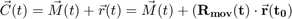
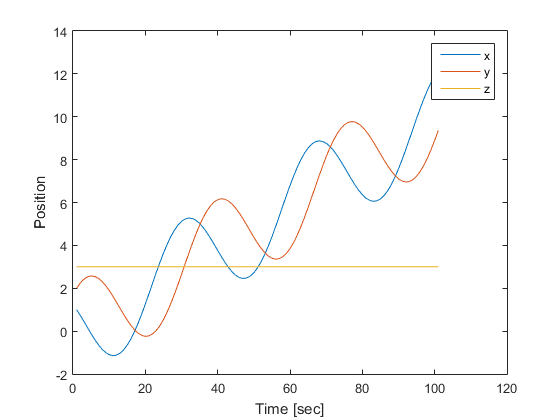

find_trajectory
Calculate trajectory from object position/orientation and relative position

Movement trajetory of a point on an object, from the position and orientation of a sensor, and the relative position of the point at t=0.
Contents
Syntax
trajectory = find_trajectory(r0, Position, Orientation)
Input Arguments
- r0 -- 3D Position of point relative to center of markers, when the object is in the reference position.
- Position -- x/y/z coordinates of COM, relative to the reference position [Nx3-Matrix]
- Orientation --Orientation relative to reference orientation, expressed as quaternion-vector [Nx3-Matrix]
Output Arguments
- movement -- x/y/z coordinates of the position on the object, relative to the reference position of the markers
Examples
%% find_trajectory_demo % Application example of the function |find_trajectory| % % ------------------ % author: ThH % date: Aug-2017 % ver: 0.1 t = 0:0.1:10; trans = [1 1 0]; translation = t' * trans; M(1,:) = [0, 0, 0]; M(2,:) = [1, 0, 0]; M(3,:) = [1, 1, 0]; M = M - repmat(mean(M), 3, 1); q = [zeros(2, length(t)); deg2quat(100*t')']'; M1 = rotate_vector(M(1,:), q) + translation; M2 = rotate_vector(M(2,:), q) + translation; M3 = rotate_vector(M(3,:), q) + translation; data = [M1, M2, M3]; [pos, ori] = analyze_3Dmarkers(data, data(1,:)); r0 = [1,2,3]; movement = find_trajectory(r0, pos, ori); plot(movement) xlabel('Time [sec]') ylabel('Position') legend('x', 'y', 'z')